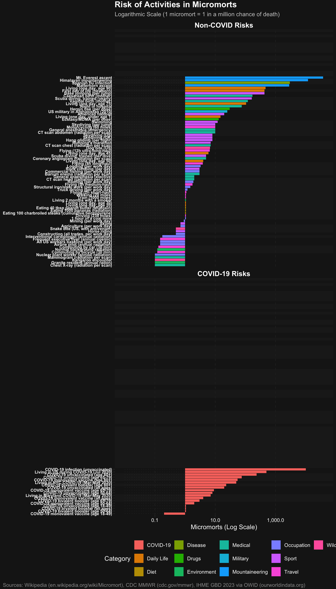

“Statistics are not just numbers; they are the way we make sense of the world.” — Sir David Spiegelhalter
This vignette outlines the philosophy of “Palatable Units” championed by David Spiegelhalter (Winton Professor for the Public Understanding of Risk, Cambridge). His core argument is that abstract probabilities (e.g., “0.00004% hazard ratio”) are meaningless to most people. To demystify risk, we must translate these into concrete, relatable units.
1. The Core Philosophy: Compare Apples to Oranges
The goal of palatable units is to create a common currency for risk. This allows us to strip away the emotional “dread factor” from scary-sounding events and compare them rationally against mundane activities.
The Standard Units
- Micromort: 1-in-a-million chance of acute death (sudden event).
- Microlife: 30 minutes of life expectancy lost/gained per day (chronic attrition).
What does 1-in-a-million feel like?
Abstract probabilities are hard to grasp. Spiegelhalter offers a concrete anchor (The Norm Chronicles, 2013; plus.maths.org):
Flip a fair coin 20 times. The probability of getting 20 heads in a row is 1 in 1,048,576 — approximately 1 micromort.
This is a mathematical constant (), not an estimate. It requires no denominator, no external source, and no geographic adjustment. If you can imagine the surprise of 20 consecutive heads, you can feel the scale of 1 micromort.
For context, Gigerenzer (Calculated Risks, 2002) recommends expressing all probabilities as natural frequencies — counts in a defined population rather than percentages. “1 death per 1,000,000 exposures” is clearer than “0.0001% mortality rate.” This package follows that convention: every micromort value has a traceable numerator (deaths) and denominator (exposures).
2. Micromorts: Measuring “Stopping Living” (Hazard)
A micromort measures acute hazard: the immediate probability of an event causing death.
- Normalization: Risk is normalized per event (or per unit distance), independent of the event’s duration.
-
Time Horizon: The “time” is the discrete event itself.
- Skydiving: The risk is ~7 micromorts per jump. Whether the freefall lasts 30 seconds or 60 seconds is secondary to the event of jumping.
- Scuba Diving: The risk is ~5 micromorts per dive. A 30-minute dive and a 45-minute dive are treated as single “dive events” in broad statistics, though technically longer exposure increases risk.
- Anesthesia: ~10 micromorts per operation.
Comparative Risk Table
The following table uses common_risks(), the package’s curated dataset of 62 acute risks with full provenance tracking:
Comparison: Riding a motorcycle for just 60 miles carries the same acute death risk (~10 micromorts) as undergoing general anesthesia. Using a standardized dataset enables apples-to-apples comparisons across activities.
3. Microlives: Measuring “Speed of Aging” (Attrition)
While micromorts measure sudden death (Hazard), Microlives measure chronic attrition: the rate at which you are “using up” your life expectancy.
- Definition: 1 Microlife = 30 minutes of life expectancy per day.
- Normalization: Risk is normalized per day of maintaining a habit.
- Unit of Attrition: The “unit” is the expected lifespan. -1 Microlife means your expected lifespan has shrunk by 30 minutes.
- Time Horizon: Continuous. If you smoke 20 cigarettes a day, you are losing 10 microlives (5 hours) every single day.
Daily Habits Table
Using chronic_risks(), the package’s curated dataset of 22 chronic lifestyle factors:
Clarification: A value of -1 Microlife is a loss (attrition). It effectively means you are aging 30 minutes faster than normal. The
annual_effect_dayscolumn shows the cumulative impact over a year—a -1 daily deficit sums to ~7.5 days of lost life annually.
4. Visualization: The Risk Ladder
Spiegelhalter advocates for a Logarithmic Risk Ladder. This visualization helps placing rare risks (like asteroid impacts or terrorism) in context with daily risks.
- Why Log Scale? Because risks span vast orders of magnitude (1 in 10 to 1 in 10 million).
- Interpretation: A “100% increase” in a very rare risk (e.g., eating bacon increasing bowel cancer risk) might look huge in headlines but is often negligible on the ladder compared to the baseline risk of driving.

For interactive exploration, use plot_risks_interactive() which provides:
- Hover details showing micromorts, microlives, and period
- Click legend to show/hide categories
- Dropdown filter for COVID-19 vs Other risks
Warning in RColorBrewer::brewer.pal(max(N, 3L), "Set2"): n too large, allowed maximum for palette Set2 is 8
Returning the palette you asked for with that many colors
Warning in RColorBrewer::brewer.pal(max(N, 3L), "Set2"): n too large, allowed maximum for palette Set2 is 8
Returning the palette you asked for with that many colorsInteractive risk ladder with hover details, category filtering, and zoom.
5. Media Perception vs. Actual Risk
A key motivation for palatable units is correcting the perception gap between what we fear and what actually kills us.
The Mismatch
According to Our World in Data, media coverage dramatically misrepresents actual causes of death:
| Cause of Death | Actual Deaths (%) | Media Coverage (%) | Ratio |
|---|---|---|---|
| Heart disease | 29% | ~2% | 0.07x |
| Cancer | 27% | ~5% | 0.19x |
| Homicide | 0.9% | ~39% | 43x |
| Terrorism | <0.01% | ~18% | >1800x |
Key insight: Heart disease and cancer cause 56% of deaths but receive only 7% of media coverage. Meanwhile, terrorism (causing 16 deaths in 2023) received 18,000× more coverage than its proportional death rate.
Why This Matters
Micromorts and microlives provide a standardized currency to cut through emotional reactions:
- Terrorism (flying in 2001): ~0.01 micromorts per flight
- Daily baseline (age 40): ~2 micromorts per day
- Driving 230 miles: 1 micromort
The fear of flying after 9/11 led many Americans to drive instead, resulting in an estimated 1,600 additional road deaths—far exceeding the attack’s direct toll.
Applying Palatable Units
When news reports a “50% increase in cancer risk,” use this framework:
- Find the baseline: What’s the absolute risk? (e.g., 1 in 10,000)
- Convert to micromorts: 1 in 10,000 = 100 micromorts
- Apply the increase: 50% more = 150 micromorts
- Compare to familiar risks: 150 micromorts ≈ driving 150 × 230 = 34,500 miles
This contextualization reveals whether a “scary” headline represents a meaningful risk change.
6. Recommended Tools
While David Spiegelhalter focuses on concepts rather than specific software, the following R packages align with his mission of clear risk communication:
-
riskCommunicator: Designed for public health to provide interpretable effect measures (risk differences, number needed to treat) rather than abstract regression coefficients. -
ggplot2: The standard for creating custom visuals like Risk Ladders and icon arrays. -
micromort(this package): Specifically built to implement the palatable units framework.
References
Primary Sources
- Spiegelhalter, D., & Blastland, M. (2013). The Norm Chronicles: Stories and numbers about danger. Profile Books.
- Spiegelhalter, D. (2019). The Art of Statistics: Learning from Data. Pelican.
Media Perception and Risk Communication
- Does the news reflect what we die from? - Our World in Data analysis of media coverage vs actual causes of death.
- Causes of Death - Our World in Data global mortality statistics.
- How the news changes the way we think and behave - BBC Future on media influence.
- Media Bias in Portrayals of Mortality Risks - Academic study comparing newspaper coverage to death rates.
- Terrorism and You: The Real Odds - American Enterprise Institute analysis of terrorism risk perception.
- Risk communication in the news - UK Parliamentary Office of Science and Technology briefing.
- Media Coverage and Mortality Risk Assessment - PMC research on media effects on risk perception.
Reproducibility
Show code
sessionInfo()
R version 4.5.2 (2025-10-31)
Platform: aarch64-apple-darwin24.6.0
Running under: macOS Tahoe 26.6.2
Matrix products: default
BLAS: /nix/store/gf17x1bj3m732n39jznn6kz69szbr5rb-blas-3/lib/libblas.dylib
LAPACK: /nix/store/5kg4z5bffhr8nry8bl8l5wlxvpy54dm2-openblas-0.3.30/lib/libopenblasp-r0.3.30.dylib; LAPACK version 3.12.0
locale:
[1] en_US.UTF-8/en_US.UTF-8/en_US.UTF-8/C/en_US.UTF-8/en_US.UTF-8
time zone: Europe/Belfast
tzcode source: internal
attached base packages:
[1] stats graphics grDevices utils datasets methods base
other attached packages:
[1] DT_0.34.0 targets_1.11.4 micromort_0.2.0 testthat_3.3.1
loaded via a namespace (and not attached):
[1] gtable_0.3.6 bslib_0.9.0 xfun_0.55 ggplot2_4.0.1
[5] htmlwidgets_1.6.4 processx_3.8.6 callr_3.7.6 crosstalk_1.2.2
[9] vctrs_0.6.5 tools_4.5.2 ps_1.9.1 generics_0.1.4
[13] base64url_1.4 tibble_3.3.0 pkgconfig_2.0.3 data.table_1.18.0
[17] checkmate_2.3.3 secretbase_1.0.5 RColorBrewer_1.1-3 S7_0.2.1
[21] desc_1.4.3 assertthat_0.2.1 lifecycle_1.0.4 compiler_4.5.2
[25] farver_2.1.2 credentials_2.0.3 brio_1.1.5 codetools_0.2-20
[29] sass_0.4.10 htmltools_0.5.9 sys_3.4.3 usethis_3.2.1
[33] lazyeval_0.2.2 yaml_2.3.12 plotly_4.11.0 tidyr_1.3.2
[37] jquerylib_0.1.4 pillar_1.11.1 openssl_2.3.4 cachem_1.1.0
[41] tidyselect_1.2.1 digest_0.6.39 dplyr_1.1.4 purrr_1.2.0
[45] arrow_22.0.0 rprojroot_2.1.1 fastmap_1.2.0 grid_4.5.2
[49] cli_3.6.5 magrittr_2.0.4 pkgbuild_1.4.8 withr_3.0.2
[53] prettyunits_1.2.0 scales_1.4.0 backports_1.5.0 bit64_4.6.0-1
[57] httr_1.4.7 rmarkdown_2.30 igraph_2.2.1 bit_4.6.0
[61] otel_0.2.0 askpass_1.2.1 evaluate_1.0.5 knitr_1.51
[65] viridisLite_0.4.2 rlang_1.1.6 gert_2.2.0 Rcpp_1.1.0
[69] glue_1.8.0 pkgload_1.4.1 jsonlite_2.0.0 R6_2.6.1
[73] fs_1.6.6 units_1.0-0 micromort 0.1.0 | Git 94d93d2 | R 4.5.2 | Built 2026-04-18 12:20:56